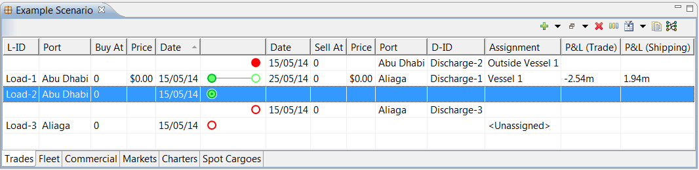
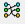
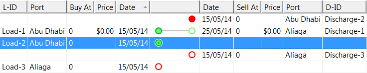
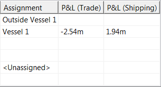
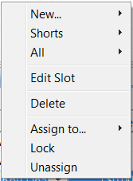
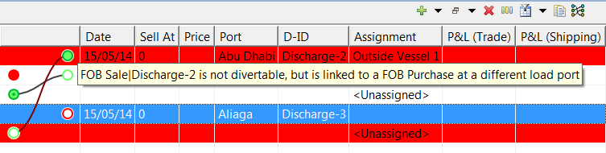

Table of Contents
|  |
The Trades Tab shows every buy and sell position in the scenario and allows you to modify how loads (purchase opportunities) are linked to discharges (sales opportunities). It has an additional icon:
|
 |
Reset Wiring |
This button will rearrange the grid to provide a neat visual layout, with slots paired in the same cargo shown in the same row. |
|
The central wiring column gives a visualisation of the slots, their types and how they are linked to form cargoes. Each slot is represented by a circle, with purchase slots on the left, and sale slots on the right. Filled circles indicate FOB slots, and empty circles indicate DES slots. A dot in the centre of a circle indicates that the slot is optional; if there is no dot, the slot must be fulfilled. A grey line between circles means that the cargo cannot be rewired by the optimiser; these slots will remain paired together after optimisation. If circles are joined by a black line between circles, the optimiser will consider linking the slots with other buy or sell opportunities instead. |
The columns immediately on either side of the wiring column provide information on the slots.
|  |
|
L-ID / D-ID |
The name (ID) of the slot |
|
Port |
The port associated with the slot |
|
Buy At / Sell At |
The expression (or contract) used to calculate the transaction price per mmBtu |
|
Price |
The calculated price per mmBtu of this transaction |
The remaining columns in the table relate to the cargo: 
|
Assignment |
The vessel assigned to this cargo. |
|
P&L (Trading) |
The profit & loss calculated for this cargo (in million dollars). |
|
P&L (Shipping) |
The profit & loss calculated for this cargo (in million dollars). |
By right-clicking a row in the trades table on the left side or right side of the visual summary column, you can bring up a context menu with actions relevant to the load or discharge slot. (If there is only one slot in the row, the appropriate context menu will come up for that slot, wherever you right-click the row.) 
The “New”, “Shorts” (for load slots) / “Longs” (for discharge slots) and “All” menu items allow the slot to be directly linked to a complementary slot, which can be chosen from a sub-menu.
|
New |
Creates a new paired slot of an appropriate type; if you right-clicked on a FOB purchase or DES sale you may create a shipped or non-shipped cargo. |
|
Shorts / Longs |
Brings up a list of available open positions which are compatible with the selected slot (“Shorts” or “Longs”). |
|
All |
Brings up a list of all postions which are compatible with the selected slot, including those slots which are already paired. Available slots can be browsed by port or contract. Only appears if there are compatible positions. |
|
Edit Slot |
Brings up an editor dialog where you can full modify the selected slot. See the section on the Cargo Editor for complete information on the slot editor layout. |
|
Delete |
Deletes the selected slot. |
|
Assign to... |
Sets the vessel assigned to the slot (or cargo). Only appears for DES purchase, FOB sale or paired slots. |
|
Lock/Unlock |
Freeze/unfreeze the vessel assignment. The optimisation will not move (or rewire) these. |
|
Unassign |
Unassign the vessel from the cargo (or slot), leaving the optimisation to decide. |
Rewiring Cargoes
|
The central wiring column in the Trades Tab allows purchases and sales to be conveniently paired by the user. The lines joining circles in this column indicate slots which are paired to form a complete trade; by (left-)clicking on a circle and dragging the mouse, you can “stretch” the line to join it to a different slot - or unpair a slot entirely. |
|
The auto-validation will turn the wire red if pairings violate constraints and similarly will highlight any trades which are invalid (red for errors, yellow for warnings).
The central wiring column in the Trades Tab allows purchases and sales to be conveniently paired by the user. The lines joining circles in this column indicate slots which are paired to form a complete trade; by (left-)clicking on a circle and dragging the mouse, you can “stretch” the line to join it to a different slot - or unpair a slot entirely.
The auto-validation will highlight any trades which are invalid (red for errors, yellow for warnings).
|  |
Tip: Hover over for a description of the validation problem.